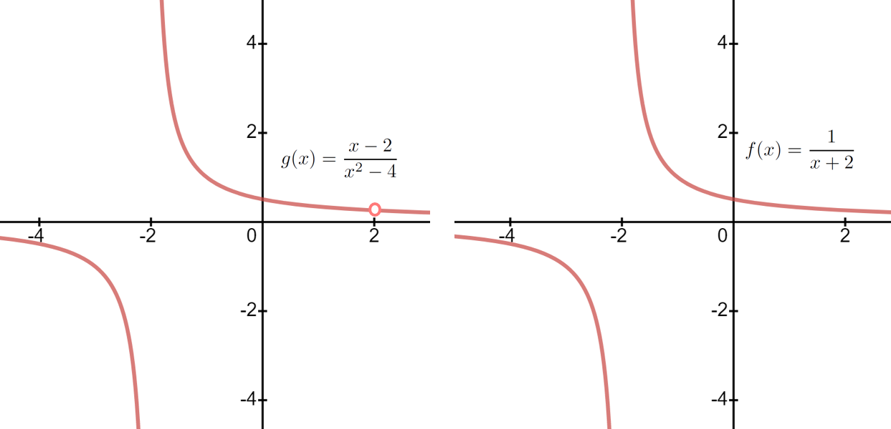

Based on our experience so far it is tempting to conclude that we can locate vertical asymptotes by simply setting the denominator equal to zero and solving. But this is a naive conclusion as we will see next.
Example1.4.1.0.1.
Consider \(y=\frac{x-2}{x^2-4}\text{.}\) Setting the denominator equal to zero yields \(x=-2\) and \(x=2\text{,}\) but only one of these is a vertical asymptote. Do you see which one?
Let’s take a careful look at this example. By Definition 1.3.0.0.29 we will have a vertical asymptote when either one-sided limit of a function increases or decreases without bound, so we must evaluate each one-sided limit.
Explain how you know the limit above is not \(\infty\text{.}\)
We were careful to use one-sided limits to find the vertical asymptote at \(x= -2\) because this is what Definition 1.3.0.0.29 calls for. Strictly speaking we only needed one of them, but since these limits were not equal we evaluated them both.
However, for \(x=2\text{,}\) both one-sided limits are the same so we have
Confirm \(\tlimitX{x}{2}{\frac{x-2}{x^2-4}}{x\gt2}=\frac14\) and \(\tlimitX{x}{2}{\frac{x-2}{x^2-4}}{x\lt2}=\frac14\text{.}\)
Observe that this limit has the form \(\limit{x}{2}{\frac{x-2}{x^2-4}}=\frac{\approach{0}}{\approach{0}}\text{.}\) A limit of this form is called an Indeterminate Form\aside{There are other kinds of Indeterminate Forms. We will encounter them later in this chapter.}.
Drill1.4.1.0.5.
Find all vertical asymptotes of the graphs of each of the following functions.
(a)
\(f(x)= \frac{x+2}{x^2-4}\)
(b)
\(f(x)= \frac{x-2}{x^2-4}\)
(c)
\(f(x)= \frac{x-2}{x^2-5x+6}\)
(d)
\(f(x)= \frac{x-3}{x^2-5x+6}\)
(e)
\(f(x)= \frac{x}{x^3-1}\)
(f)
\(f(x)= \frac{x^2-x}{x^4-1}\)
Example 1.4.1.0.1 demonstrates that a function which does not exist at a point is a more general concept than a function with a vertical asymptote at a point.
Notice that \(g(x)=\frac{x-2}{x^2-4}\) is undefined at both \(x=2\) and \(x=-2\text{,}\) but it only has an asymptote at \(x=-2\text{.}\) It also displays something subtle about limits. One would be tempted to say that
and this is true when \(x\neq2\text{.}\) However, if we graph the two functions, \(g(x)=\frac{x-2}{x^2-4}\) and \(f(x)=\frac{1}{x+2}\) we see that there is a small difference between them:

Do you see the difference? The value of \(g(2)\) is not defined because \(g(2)=\frac{2-2}{4-4}\) and we get a zero denominator. But no such difficulty occurs with \(f\) because \(f(2) = \frac{1}{2+2}=\frac14\text{.}\)
So, when \(x\neq2\text{,}\)\(g(x)\) and \(f(x)\) are the exactly the same. But they disagree when \(x=2\text{.}\) More precisely \(x=2\) is not in the domain of \(g(x)\) but it is in the domain of \(f(x)\text{.}\) Since the domains differ they must be different functions and it is incorrect to write \(\frac{x-2}{x^2-4}=\frac{1}{x+2}\) even though it is true for all but one value of \(x\text{.}\)
Drill1.4.1.0.6.
Suppose \(a\neq0\) is a real number.
(a)
Find all vertical asymptotes of \(f(x)=\frac{x-a}{x^2-a^2}\text{.}\)
(b)
Does your solution of part (a) still work when \(a=0\text{?}\)
Drill1.4.1.0.7.
In [cross-reference to target(s) "PROBLEMFoliumOfDescartes1" missing or not unique] we looked at the Folium of Descartes from Newton’s dynamic point of view.
In that problem you showed that the fluents, \(x(t) =
\frac{3t}{1+t^3}\) and \(y(t)=\frac{3t^2}{1+t^3}\) satisfy the equation of the Folium:
\begin{equation*}
x^3+y^3=3xy
\end{equation*}
and that \(t=0\) is the only value of \(t\) where \(\left(x(t), y(t)
\right)=(0,0)\text{.}\) How then, can it be that the Folium crosses itself at the origin?
(a)
In [cross-reference to target(s) "PROBLEMFoliumOfDescartes1" missing or not unique] you determined that \(y\ge0\) when \(t\gt-1\text{.}\) Determine the values of \(t\) for which \(x\ge0\) and the which \(x\lt0\text{.}\)
(b)
Show that \(\limit{t}{\pm\infty}{x(t)}=\limit{t}{\pm\infty}{y(t)}=0.\)
(c)
Compute \(\dfdx{y}{x} = \frac{\dot{y}}{\dot{x}}\) in terms of \(t\) and compute \(\limit{t}{\pm\infty}{\frac{\dot{y}}{\dot{x}}}\text{.}\) Is this consistent with what you see on the graph?
(d)
Show that for \(t\neq0\text{,}\)\(t=\frac{y}{x}\) so that geometrically, \(t\) represents the slope of the line joining the origin to the point \((x,y)\) on the graph of the Folium. Is this consistent with what you obtained in part a? Explain.
(e)
Compute each of the following:
\(\displaystyle \rtlimit{t}{-1}{x(t)}\)
\(\displaystyle \ltlimit{t}{-1}{x(t)}\)
\(\displaystyle \rtlimit{t}{-1}{y(t)}\)
\(\displaystyle \ltlimit{t}{-1}{y(t)}\)
\(\displaystyle \rtlimit{t}{-1}{\dfdx{y}{x}}\)
\(\displaystyle \ltlimit{t}{-1}{\dfdx{y}{x}}\)
Is this consistent with the graph and the fact that \(t\) represents the slope from the origin to the point \((x,y)\text{?}\) Explain.
We found earlier that \(\tlimit{x}{\infty}{\frac{\sin(x)}{x}}=0\text{,}\) so the function \(y=\frac{\sin(x)}{x}\) must have a horizontal asymptote at \(y=0\text{.}\) Clearly \(y=\frac{\sin(x)}{x}\) is undefined at \(x=0\text{.}\) Does its graph have a vertical asymptote at \(x=0\text{?}\) Take your best guess.
To answer this question we need to evaluate the limit \(\tlimit{x}{0}{\frac{\sin(x)}{x}}\text{.}\) But how can we do that? If we try the obvious ploy of just “plugging in” zero for \(x\) we get the indeterminate form \(\frac{(\rightarrow0)}{(\rightarrow0)}\text{,}\) and we know we need to proceed cautiously with an indeterminate form.
From the graph of \(\frac{\sin(x) }{x}\) (in the sketch below) it would appear that \(\frac{\sin(x)}{x}\rightarrow1\) as \(x\rightarrow0\text{.}\) This is correct, but we’ve learned to be wary of relying on graphs. It would be best to evaluate the limit by another technique if possible.
It is hard to see what it would be. There isn’t much algebra we can do here. If there were other trigonometric functions involved we might be able to employ some trigonometric identity in the numerator, but there just isn’t much we can do with \(\sin(x)\text{.}\) This problem poses a bit more of a challenge than the indeterminate forms we have dealt with so far. We need a new idea.
Since the \(\sin(x)\) isn’t helping maybe we can replace it with something simpler. Seriously. Give some thought to what might be a valid replacement before reading on. Remember that we’re really only interested in values of \(x\) that are very close (infinitely close?) to zero.
The Principle of Local Linearity says that the graph of a function and its tangent line are locally indistinguishable. Since we’re only interested in values of \(x\) near zero — locally around zero — let’s try replacing \(\sin(x)\) with its tangent line.
Problem1.4.1.0.8.
Show that the line tangent to \(y=\sin(x)\) at \(x=0\) is \(y=x\text{.}\)
also has the indeterminate form \(\frac{(\rightarrow0)}{(\rightarrow0)}\) so we’ll need the tangent lines of the numerator and denominator at \(x=0\) again.
Problem1.4.1.0.10.
Show that \(y=3x\) is the equation of the line tangent to \(\tan(3x)\) at \(x=0\text{.}\)
Show that \(y=2x\) is the equation of the line tangent to \(\sin{(2x)}\) at \(x=0\text{.}\)
Replacing the numerator and denominator by their tangent lines at \(x=0\text{,}\) we get
Graph the equation \(y=\frac{\tan(3x)}{\sin(2x)}\) and zoom in on the portion of the graph near \(x=0\text{.}\) Does it look like we’ve found the correct limit?
The idea of replacing the numerator and denominator of indeterminate forms with their tangent lines has worked in all of our examples so let’s look at this problem in a more general context. If \(f(x)\) and \(g(x)\) are differentiable functions such that \(f(a)=g(a)=0\) then \(\limit{x}{a}{\frac{f(x)}{g(x)}}\) is an indeterminate form.
Problem1.4.1.0.12.
Show that the equations of the lines tangent to \(f(x)\) and \(g(x)\) at \(x=a\) are
(We need to assume that \(g^\prime(a)\neq0\text{.}\) Do you see why?) This is consistent with all of our examples above so it appears that the Principle of Local Linearity has led us in the right direction. All of the evidence we’ve gathered so far suggests rather strongly that when we are faced with the indeterminate form \(\frac{(\rightarrow0)}{(\rightarrow0)}\) simply replacing the numerator and denominator with their tangent lines will work.
This idea is due to the Swiss mathematician Johann Bernoulli 1 . Johann and his brother Jacob Bernoulli 2 (\(1667-1748\)) were taught Calculus by Leibniz himself, but soon showed themselves to be his equal, or nearly so.
Even though L’Hôpital acknowledged his indebtedness to Johann Bernoulli for this procedure it has always been known as L’Hôpital’s Rule.
As a mathematician L’Hôpital was not in the same league as Leibniz, Newton, or the Bernoullis — few are — but he was a very competent mathematician and his work helped to disseminate the ideas of Calculus just as Maria Gaëtana Agnesi’s text would do in the following century.
Now look back at the examples in this section and notice the following fact: In each case when the limit was finally evaluated it turned out to be the slope of the line tangent to the graph of the numerator divided by the slope of the line tangent to the graph of the denominator. But the slope of the line tangent to \(f(x)\) at \(x=a\) is simply (recall that in [cross-reference to target(s) "SECTIONDerivative" missing or not unique] we introduced Lagrange’s prime notation):
We said at the time that there would be times when Lagrange’s notation is much more convenient than the differential notation. This is such a time. In this section we will be using Lagrange’s notation exclusively to indicate derivatives. \(f^\prime(a)\text{.}\)
In light of (1.4.3) it appears that we don’t need to go to the trouble of finding the tangent lines. We can evaluate these indeterminate forms as follows:
Theorem1.4.1.0.15.L’Hôpital’s Rule, (First Special Case).
Suppose \(f(x)\) and \(g(x)\) are differentiable on an open interval containing \(a\) and that \(f(a)=g(a)=0\text{.}\) Suppose also that \centerline{\(\limit{x}{a}{f^\prime(x)}=L\) and \(\limit{x}{a}{g^\prime(x)}=M\ne0\)}. Then
Because L’Hôpital’s Rule applies directly to the indeterminate form \(\frac{(\rightarrow0)}{(\rightarrow0)}\) we will refer to this as a L’Hôpital Indeterminate. Not all indeterminate forms can be handled so easily.
Example1.4.1.0.16.
Consider \(\limit{x}{0}{\frac{\tan{x}}{x}}.\) This is a L’Hôpital indeterminate so
We want to emphasize very strongly that L’Hôpital’s Rule requires a L’Hôpital indeterminate. If we don’t have a L’Hôpital{ indeterminate we can not use L’Hôpital’s Rule. If you try to use L’Hôpital’s Rule when it does not apply, you will probably not get the correct answer. The difficulty here is that nothing in the computations will alert you that anything has gone wrong. You have to be watchful for this potential pitfall.
Example1.4.1.0.18.
For example, if we mistakenly try to use L’Hôpital’s Rule, on \(\limit{x}{1}{\frac{x+1}{x+2}}\) we will obtain \(\limit{x}{1}{\frac{1}{1}}=1\text{,}\) but this is obviously incorrect.
Problem1.4.1.0.19.
Show that \(\tlimit{x}{1}{\frac{x+1}{x+2}}=\frac23\text{.}\)
Theorem 1.4.1.0.15 is useful but it is much too limited, so to speak. For example, it does not help us with this limit: \(\tlimit{x}{0}{\frac{\cos(3x)-1}{\cos(5x)-1}}\text{.}\) Even though it is a L’Hôpital indeterminate, when we apply Theorem 1.4.1.0.15 we have
Our derivation of Theorem 1.4.1.0.22 is not entirely rigorous. We will not be providing a fully rigorous derivation of L’Hôpital’s Rule because doing so is both difficult to produce and to understand. There are deep foundational issues involved and investigating these would take us too far from our primary purpose, gaining proficiency with its use. Returning to our example and using Theorem 1.4.1.0.22 this time we have
Use Theorem 1.4.1.0.22 to compute each of the following limits. If this limit given is not a L’Hôpital Indeterminate rearrange it algebraically, without changing its value, until it is a L’Hôpital Indeterminate.
(a)
\(\limit{x}{0}{\frac{e^x-1-x}{x^2}}\)
(b)
\(\limit{x}{0}{\frac{\cos(mx)-\cos(nx)}{x^2}}\) Assume that \(m\neq n\text{.}\)
(c)
\(\limit{x}{1}{\frac{x^a-ax+a-1}{(x-1)^2}}\) Assume that \(a\neq 1\text{.}\)